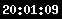
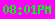

Store it in your /cgi-bin/ directory.
And proceed to Installing...
/cgi-bin (or /cgi-shl) <--server's CGI directory
|
|--clock.exe <--the clock
|
|--\doc
| |
| |--clock.html <--this document
| |--clock.readme <--readme for the clock
| |--*.gif <--images used in this document
|
|--\digits
|
|--\led
|
|--0.gif <--these gifs are used to create
|--1.gif the clock image
.
.
.
The clock will create the file clock.err to record
error messages (if any).
If you are already using the counter, it is OK to overwrite the GIFs in the \digits\led\ directory, they are the same anyway (except that there are three additional GIFs, am.gif, pm.gif, and colon.gif. The \digits\led\ directory is used to conserve disk space if you are also using the counter.
where the arguments are:
| Argument (* means required) | Possible Values | Meaning |
|---|---|---|
| format* | One of:
|
See examples below. This argument is case-sensitive |
| simple | yes or no | Use a simple style if yes. See example below. The default is no. |
| bgcolour | RRGGBB or trans | When using the simple style, specifies the background colour of
the image, or if trans is used, specifies a transparent background.
RRGGBB should be 3 2-digit hex values in one string, similar to the
HTML command <BODY BGCOLOR="RRGGBB">. This argument has no meaning when simple is not yes. The default is 000000 (black). |
| fgcolour | RRGGBB | When using the simple=yes, specifies the foreground colour of the image. Same format as bgcolour. The default is FFFFFF (white). |
<img src="/cgi-bin/clock.exe?format=secs">
<img src="/cgi-bin/clock.exe?format=24hr">
<img src="/cgi-bin/clock.exe?format=24hr&simple=yes">
<img src="/cgi-bin/clock.exe?format=normal&simple=yes&bgcolour=FF00FF&fgcolour=00FF00">


The simple style requires less disk I/O, and should execute much more quickly.
S: 1) Are you using EMWACS or
Purveyor?
2) Right-click on the broken image icon and select "View this image as..."
S: Check for a file called clock.err, there is more specific error information there.
P: I specified a background colour and foreground colour but it came out white on black anyway when using the simple=yes argument.
S: You probably misspelled bgcolour or fgcolour. Americans please note the U.
P: My server has been crashing regularly since I started using your clock
S: 0) Read the disclaimer.
1) If you are using WebSite, delete all the *.in and *.out
files in \TEMP
2) Try using the simple style to decrease the clock's execution time.
None of those helps
4) Buy more RAM
Yeah, right
5) Remove the clock.
Still crashes
6) Then it wasn't the clock: it was something else.
A: Unfortunately you cannot. You can edit the GIFs in the /led directory if you wish, making sure you keep them all the same size, but this might screw you up if you are also using the counter.
Q: Can you make a CGI like this that displays the date?
A: Nope. I'm out of the CGI business now.